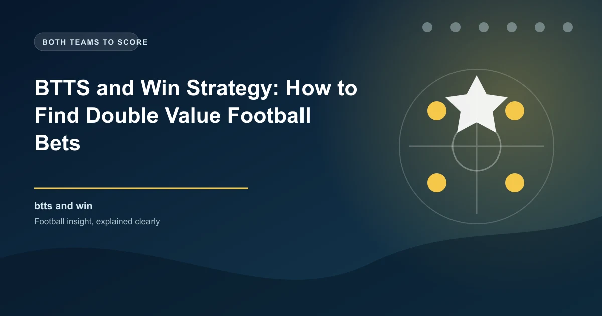

BTTS and Win Strategy: How to Find Double Value Football Bets

The BTTS and Win market is one of the most exciting combo bets in football. It requires you to predict two outcomes at once: both teams to score, and one specific team to win. When you get it right, the odds are significantly higher than a standard BTTS bet — making it a favourite among value bettors.
In this guide, we break down exactly how BTTS and Win works, the stats you need to check, the leagues that produce the best opportunities, and the mistakes that most bettors make with this market.
What Is BTTS and Win?
BTTS and Win stands for Both Teams to Score and Win. It is a single bet that combines two conditions:
- Both teams must score at least one goal during the match (regular time, 90 minutes).
- The team you select must win the match. If you pick the home team, they must win AND the away team must also score.
For example, if you back Manchester City BTTS & Win against Liverpool, you need City to win the match and Liverpool to score at least one goal. A 2-1 City win would win the bet. A 2-0 City win would lose because Liverpool did not score.
Standard BTTS: Both teams score → you win (regardless of who wins).
BTTS and Win: Both teams score AND your selected team wins → you win. Higher odds, harder to land.
How BTTS and Win Odds Work
Because you are combining two outcomes, the odds on BTTS and Win are always higher than a simple BTTS bet or a simple match result bet. The bookmaker calculates the probability of both conditions happening together.
| Market | Typical Odds | Implied Probability |
|---|---|---|
| Home Win (1X2) | 1.80 | 55.6% |
| BTTS Yes | 1.75 | 57.1% |
| BTTS & Home Win | 3.50 | 28.6% |
| BTTS & Away Win | 5.00 | 20.0% |
Notice how the BTTS and Home Win odds (3.50) are nearly double the Home Win odds alone (1.80). That extra value comes from the additional risk of requiring both teams to score.
Match: Arsenal vs Chelsea
Bet: BTTS & Arsenal Win @ 3.80
Stake: $10
Winning scenarios: Arsenal win 2-1, 3-1, 3-2, 4-2, 4-3, etc.
Potential return: $38.00
Key requirement: Chelsea MUST score. Arsenal MUST win.
Finding the Best BTTS and Win Matches
Not every match is suitable for BTTS and Win. You need games where both teams have the attacking quality to score AND where one team has a clear edge to win. Here are the key stats to examine:
1. BTTS Percentage
Look for matches where both teams have a BTTS rate of 55% or higher over their last 15-20 matches. If both sides regularly concede and score, the BTTS condition is more likely to land.
2. Home Advantage Strength
The home team should have a strong home winning record (60%+ home wins). Teams that dominate at home are more likely to win while still allowing the occasional away goal.
3. Defensive Vulnerability
Check how many goals each team concedes per game. Teams that concede regularly (1.0+ goals per game on average) are more likely to let in an away goal while still winning the match.
4. Head-to-Head BTTS History
Past meetings between the two teams can reveal patterns. If the last 5 head-to-head matches all had both teams scoring, that is a strong indicator for BTTS.
The Sweet Spot Formula
The ideal BTTS and Win match has all four of these factors:
- Home team wins 65%+ of home matches
- Both teams have BTTS in 55%+ of recent matches
- Away team scores 1.0+ goals per game on average
- Home team concedes 0.8+ goals per game on average
This combination gives you a team that is likely to win but also likely to concede at least once.
Best Leagues for BTTS and Win
Some leagues produce more BTTS and Win opportunities than others. Here are the top leagues based on BTTS frequency and predictable match outcomes:
| League | BTTS Rate | Why It Works |
|---|---|---|
| Premier League | 55-58% | High attacking quality, competitive matches |
| Bundesliga | 58-62% | Open attacking football, higher scoring |
| Eredivisie | 60-65% | Attacking philosophy, weak defences |
| Championship | 52-56% | Unpredictable, but BTTS-heavy |
| Serie A | 50-54% | Lower scoring but tactically rich |
Pro Tip: Avoid Cup Matches
BTTS and Win works best in league matches where teams play their strongest XI. In cup competitions, teams often rotate squads, which makes predictions less reliable. Stick to domestic leagues for the most consistent BTTS and Win opportunities.
BTTS and Win vs Other Combo Markets
How does BTTS and Win compare to other popular combo bets? Here is a quick comparison:
| Market | Conditions | Typical Odds | Difficulty |
|---|---|---|---|
| BTTS Yes | Both teams score | 1.70 - 2.00 | Medium |
| BTTS & Win | Both score + one team wins | 3.00 - 6.00 | Hard |
| Correct Score | Predict exact final score | 6.00 - 20.00 | Very Hard |
| Over 2.5 Goals | 3+ total goals | 1.70 - 2.10 | Medium |
| Double Chance | One of two outcomes | 1.30 - 1.60 | Easy |
BTTS and Win sits in the sweet spot between easy combo bets like Double Chance and extremely difficult bets like Correct Score. It offers meaningful odds without requiring pinpoint precision.
BTTS and Win in Accumulators
BTTS and Win selections work well in accumulators because they offer higher individual odds, which boosts your total acca return. However, there are risks to consider:
- Limit your acca to 3-4 BTTS and Win selections maximum.
- Combine with safer selections like Double Chance or Over 1.5 Goals to balance risk.
- Use acca insurance offers from bookmakers as a safety net.
- Never put more than 2% of your bankroll on a single BTTS and Win acca.
Leg 1: Arsenal BTTS & Win vs Fulham @ 3.20
Leg 2: Barcelona BTTS & Win vs Sevilla @ 3.50
Leg 3: Bayern BTTS & Win vs Frankfurt @ 3.10
Combined odds: 3.20 x 3.50 x 3.10 = 34.72
$10 stake return: $347.20
Common Mistakes to Avoid
Many bettors focus on the favourite's winning ability but forget to check whether the underdog can actually score. If the away team has scored in just 30% of their away matches, the BTTS leg is unlikely to land.
When a strong team plays a very weak opponent, the favourite often wins 3-0 or 4-0. The weaker team may not score, which kills your BTTS condition. BTTS and Win works best when both teams are relatively evenly matched in attack.
BTTS and Win odds of 7.00 or higher may look tempting, but they represent very low probability events. Stick to odds in the 3.00-5.00 range where the balance of risk and reward is most favourable.
Bankroll Management for BTTS and Win
Because BTTS and Win has a lower hit rate than simpler markets, proper bankroll management is essential:
- Stake size: Keep individual BTTS and Win bets to 1-2% of your total bankroll.
- Acca stake: For accumulators, reduce to 0.5-1% of bankroll.
- Track results: Keep a spreadsheet of every BTTS and Win bet, including the odds, stake, and result. This helps you identify which leagues and match types give you the best returns.
- Discipline: Do not chase losses by increasing stakes after a losing run. Stick to your flat-staking plan.
Step-by-Step: How to Place a BTTS and Win Bet
- Identify the match: Look for games where both teams score regularly and one team has a clear winning edge.
- Check the stats: Verify BTTS percentages, home/away records, goals scored, and goals conceded for both teams.
- Compare odds: Check BTTS and Win odds across multiple bookmakers. Small differences add up over time.
- Set your stake: Based on your bankroll and confidence level, set a stake that represents 1-2% of your bankroll.
- Place the bet: Select BTTS and Win (sometimes called "GG & Win" or "Both Score & Win") from the match markets.
- Record the bet: Log the match, odds, stake, and reasoning in your betting tracker.
When NOT to Use BTTS and Win
BTTS and Win is not always the right market. Avoid it in these situations:
- Heavy favourite vs very weak opponent: The favourite may win comfortably without conceding.
- Defensive teams: Teams that prioritise clean sheets (like Atletico Madrid under Simeone) often win 1-0, which kills the BTTS leg.
- Cup or knockout matches: Teams may play cautiously, especially in second legs or finals.
- End-of-season dead rubbers: When neither team has much to play for, motivation and intensity drop.
Make Smarter BTTS and Win Bets
Use our free AI-powered predictions to identify the best BTTS and Win opportunities across today's matches. Data-driven picks backed by real stats.
View Today's Predictions →